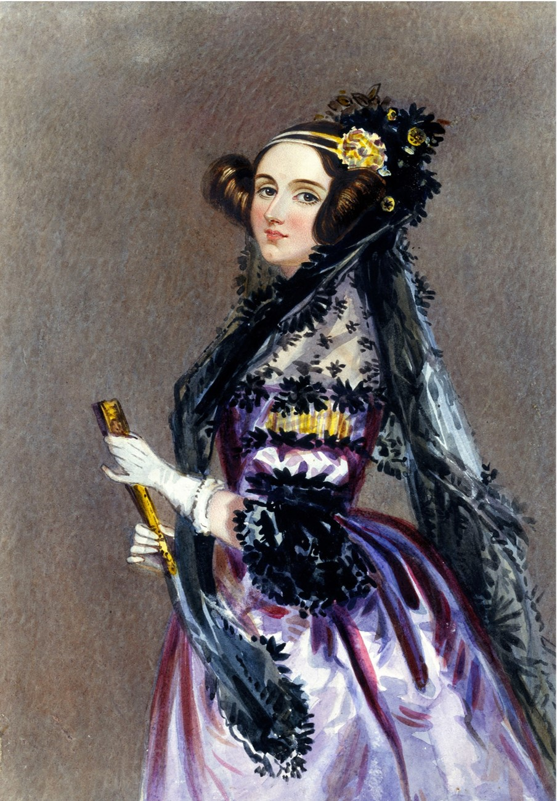

Tomography Nobel Prize
The Nobel Prize in Physiology/ Medicine was awarded to Allan Cormack and Godfrey Hounsfield for their work on computer assisted tomography.
X-rays used in WW1
X-rays started to be used as a tool in medicine very soon after their discovery, for example in World War 1. The picture shows a mobile x-ray unit developed and run by Nobel prize winner Marie Curie.
Programmable computer
The Manchester baby machine was the first stored program computer. Its development paved the way for using computers for complex calculations, like tomographic reconstruction.
Diamond Light Source opens
The UK's synchrotron Diamond Light Source is used for a wide range of science including high throughput tomographic imaging on samples as varied as space science and archaelogy.
Discovery of x-rays

The picture shows the first x-ray image, taken of Anna Bertha Ludwig's hand by Wilhelm Röntgen shortly after the discovery of x-rays. The image shows the bones of her hand and her wedding ring.
First CT scanner

The first CT scanner was created at EMI central research laboratories by Godfrey Hounsfield, and later used to perform the first brain scans on patients.
Radon transform
Johann Radon was the mathematician to first describe the integral transform of lines through a volume, a technique required to reconstruct an image from 2D x-ray projections.
First computer algorithm

Did you know:
The first computer algorithm was written by Ada Lovelace, it was designed to be used on a hypothetical computational device to calculate the sequence of Bernoulli numbers.